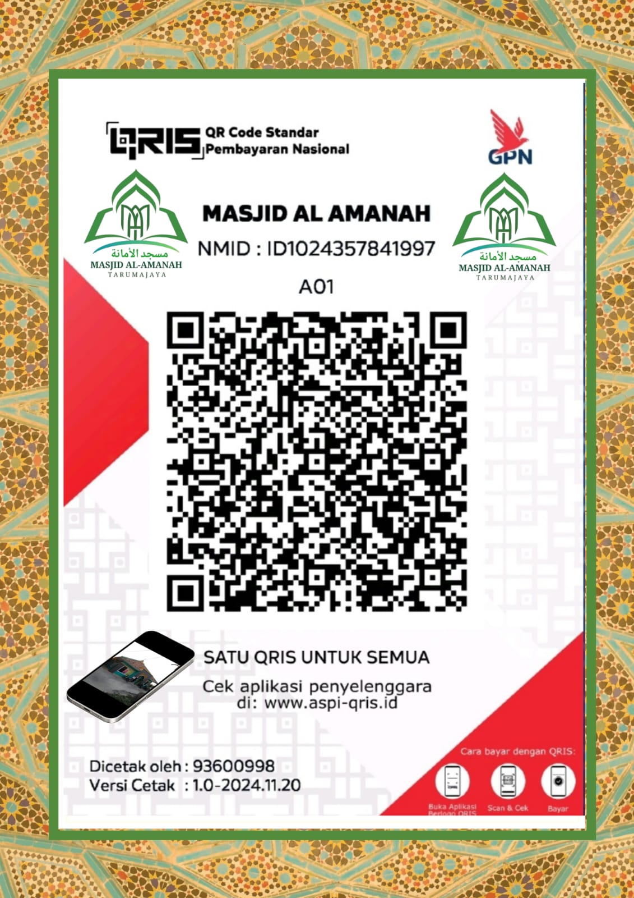

MASJID AL-AMANAH
TARUMA JAYA
TARUMA JAYA
V2QH+MGX, Kp keramat, RT.003 RW006,
Samudra Jaya, Kec. Tarumajaya, Bekasi Utara, Jawa Barat
REKENING DONASI
- BCA Syariah
- 0079900999
- An. Masjid Al-Amanah
⚠️
Seluruh dana yang didonasikan melalui kanal Masjid Al-Amanah dipastikan bukan bersumber dari dan bukan digunakan untuk tujuan pencucian uang (money laundering), pendanaan aktivitas terorisme, maupun tindak kejahatan lainnya sesuai regulasi NKRI.
DONASI LANGSUNG

Disclaimer: Setiap donasi dan infaq yang masuk melalui QRCode (QRIS) maupun Rekening resmi ini akan dikelola secara amanah untuk mendukung operasional dakwah, renovasi fasilitas masjid, serta berbagai program pemberdayaan umat lainnya di lingkungan Masjid Al-Amanah.
Media Sosial
Ikuti informasi kegiatan masjid setiap hari